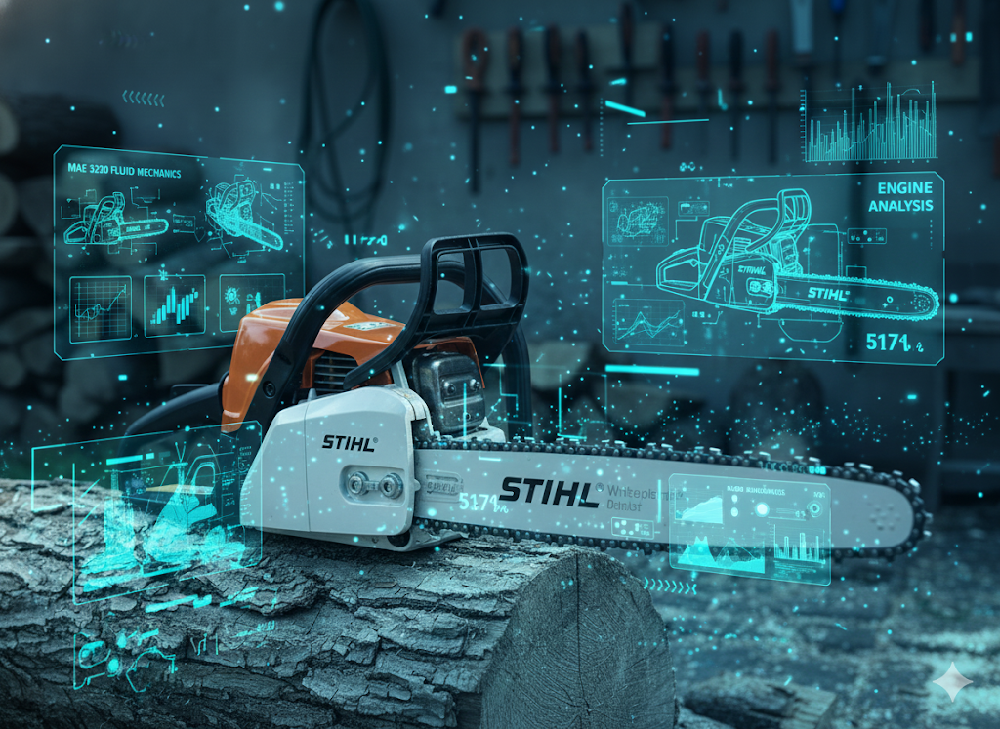

Resume
Click below to download my latest resume and review my technical background.
DOWNLOAD RESUME (PDF)
About Me
I’m a mechanical engineering student with a strong interest in how hardware behaves in the real world—fluids, mechanisms, aerodynamics, and anything that involves building something that actually moves. I like projects where I can take something apart, understand how it moves energy around, and then explain that system in a clear technical story.
MAE 3230 — Fluid Mechanics

Chainsaw Engine Fluid Mechanical Dissection
As part of MAE 3230 (Fluid Mechanics), I completed a technical project in which my team selected a mechanical system and produced an instructional video explaining its fluid-dynamic behavior. Our assigned system was a gas-powered chainsaw. I led the mechanical teardown, removing the external housing and isolating individual subsystems for analysis. My primary technical contribution focused on the rotating flow generated by the flywheel. After separating the flywheel from the crankshaft assembly, I evaluated how the blades act as a centrifugal impeller and how angular momentum is converted into useful airflow. Because the flywheel is rigidly mounted on the crankshaft, its rotational speed matches the piston cycle, and the blade geometry sets up outward flow across the engine.
From a fluid-mechanics standpoint, the air experiences constant mass flow as radius increases, but the changing flow area causes radial velocity to decrease while the tangential component grows with blade speed. This produces a net rise in fluid kinetic energy, and the corresponding pressure increase reflects the mechanical work transferred into the flow. That outward spiral delivers forced convection over the cylinder fins and ignition components, preventing thermal failure during extended operation.
Watch Project Video
MAE 3260 — System Dynamics
Toy Quadcopter Dynamics Analysis
Developed a model linking motor voltage to propeller speed, thrust, and altitude. I used a high-speed camera to record the propeller’s step response and extracted speed and timing data to estimate the motor gain and time constant.
Download Report
MAE 3270 — Mechanical Design
Torque Wrench Design & Analysis
Designed a torque wrench capable of withstanding ±600 in-lbf loading. We used iterative design scripts in MATLAB to explore geometries and materials, followed by a detailed CAD model and finite element stress analyses in ANSYS.
Download Report
Heat Transfer
Pin Fin and Heat Sink Analysis
One homework assignment that I found especially valuable was the problem set where we analyzed a cylindrical pin fin and a fin array heat sink. In this assignment, I applied the fin analysis methods from class to evaluate how effectively fins enhance convective heat transfer. I started by determining the fin parameter m = √(hP / kAc) and using the insulated-tip fin solution to calculate the temperature distribution along the fin. This allowed me to compute temperatures at specific locations along the fin, which showed how the temperature decreases from the base toward the tip due to convection to the surrounding air. I then calculated the fin efficiency and fin effectiveness using their definitions and compared the results with the expressions provided in the textbook tables. Working through these steps helped me better understand how geometry, material properties, and the convection coefficient influence how well a fin actually performs.
The second part of the assignment focused on analyzing a full fin array heat sink using a thermal resistance approach. I calculated the heat transfer rate of a single fin, extended that analysis to a 5×5 fin array, and determined the overall surface efficiency of the array. From there, I modeled the entire system as a thermal resistance network that included contact resistance, conduction through the slab, and convection from the finned surface. This allowed me to predict the temperature of the thin-film heater and compare the result to the case without a heat sink. The comparison clearly showed how adding fins significantly reduces the heater temperature by increasing the effective surface area for convection. This assignment was useful because it connected the theoretical fin equations to a realistic engineering problem involving heat sink design, which is directly relevant to applications such as electronics cooling and thermal management systems.
Download Heat Transfer Homework